Merverdiavgift (MVA), også kjent som moms, er en indirekte avgift som pålegges salg av varer og tjenester i Norge. MVA er en av de viktigste inntektskildene for staten og utgjør en betydelig del av de totale skatteinntektene.
For en mer utfyllende guide, se Merverdiavgift: Komplett Guide til MVA i Norge.
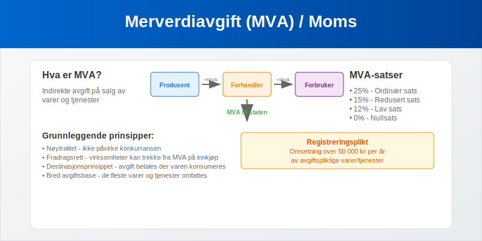
Hva er Merverdiavgift?
Merverdiavgift (MVA) er en avgift som pålegges på hvert ledd i omsetningskjeden, fra produsent til sluttforbruker. Avgiften beregnes som en prosentandel av salgsprisen og betales av forbrukeren, men innkreves av virksomhetene som selger varene eller tjenestene.
For detaljert informasjon om B2C-transaksjoner og deres spesifikke MVA-behandling, se Hva er B2C? Business-to-Consumer i Regnskap og for MVA-behandling i B2B-transaksjoner, se Hva er B2B? Business-to-Business i Regnskap.
Grunnleggende Prinsipper
MVA-systemet bygger på følgende prinsipper:
- Nøytralitet - avgiften skal ikke påvirke konkurransen mellom virksomheter
- Fradragsrett - virksomheter kan trekke fra MVA de har betalt på innkjøp
- Destinasjonsprinsippet - avgiften betales der varen eller tjenesten konsumeres
- Bred avgiftsbase - de fleste varer og tjenester omfattes av avgiftsplikten
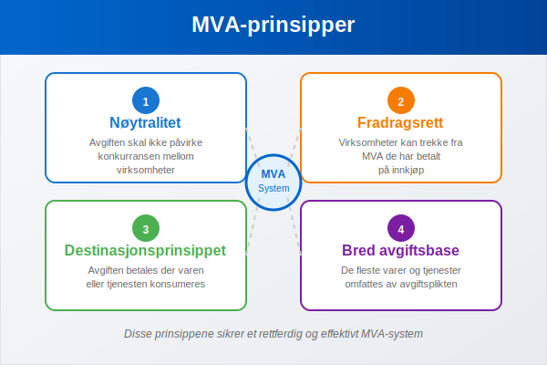
MVA-satser i Norge
Norge har flere ulike MVA-satser avhengig av type vare eller tjeneste:
Ordinær MVA-sats (25%)
Den ordinære MVA-satsen på 25% gjelder for de fleste varer og tjenester, inkludert:
- Klær og sko
- Elektronikk og hvitevarer
- Møbler og innredning
- Restauranttjenester
- Frisørtjenester
- Reparasjonstjenester
Redusert MVA-sats (15%)
Redusert sats på 15% gjelder for:
- Næringsmidler (mat og drikke for mennesker) – se Moms på mat
- Overnatting på hotell, pensjonat og lignende
- Persontransport med rutebil, båt, tog og fly
- Kino og andre kulturarrangementer
Lav MVA-sats (12%)
Lav sats på 12% gjelder for:
- Aviser, tidsskrifter og bøker
- Kringkasting (TV- og radiolisenser)
Nullsats (0%)
Nullsats gjelder for:
- Eksport av varer og tjenester
- Skipsfart i utenriksfart
- Luftfart i utenriksfart
| MVA-sats | Prosent | Eksempler |
|---|---|---|
| Ordinær sats | 25% | Klær, elektronikk, restauranter |
| Redusert sats | 15% | Mat, overnatting, transport |
| Lav sats | 12% | Bøker, aviser, kringkasting |
| Nullsats | 0% | Eksport, utenriksfart |
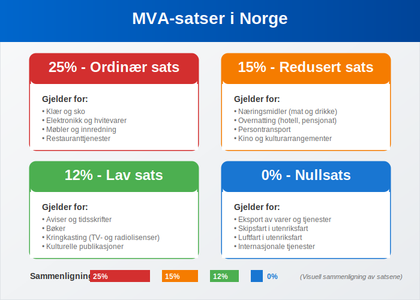
For en dyptgående forklaring av hvordan MVA-satser varierer mellom ulike næringer og bransjer, samt bransjespecifikke MVA-regler og rapporteringskrav, se vår omfattende guide til næringsspesifikasjon.
MVA-fritak
Enkelte varer og tjenester er fritatt for MVA:
Finansielle Tjenester
- Bank- og forsikringstjenester
- Verdipapirhandel
- Valutaveksling
- Kredittformidling
Helse- og Sosialtjenester
- Legetjenester og tannlegetjenester
- Fysioterapi og kiropraktikk
- Sykehustjenester
- Pleie- og omsorgstjenester
Undervisning
- Grunnskole og videregående skole
- Høyere utdanning
- Kursvirksomhet som leder til offentlig godkjent eksamen
Eiendomsomsetning
- Salg av fast eiendom (med unntak for nye boliger)
- Utleie av fast eiendom til boligformål
- Utleie av lokaler til fritaksberettigede virksomheter
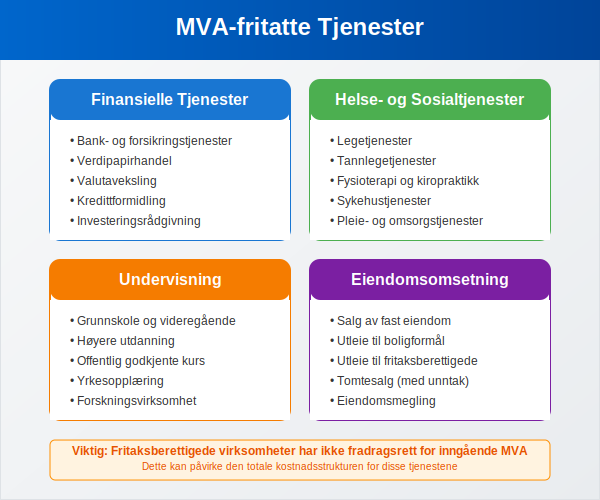
Registreringsplikt for MVA
Når må virksomheter registrere seg?
Foretak må registrere seg i MVA-registeret når:
- Omsetning av avgiftspliktige varer/tjenester overstiger 50 000 kr per år
- Virksomheten driver med avgiftspliktig aktivitet uavhengig av omsetning
- Import av varer til Norge
- Fjernsalg til Norge fra utlandet overstiger 50 000 kr
Frivillig Registrering
Virksomheter kan også frivillig registrere seg for MVA selv om de ikke når grensen på 50 000 kr. Dette kan være fordelaktig for:
- Å få fradragsrett for MVA på innkjøp
- Å fremstå som profesjonell overfor kunder
- Å forenkle regnskapsføringen
Registreringsprosess
- Søknad sendes til Skatteetaten via Altinn
- Dokumentasjon av virksomhetens aktivitet
- Organisasjonsnummer må være registrert først
- Godkjenning gis normalt innen få dager
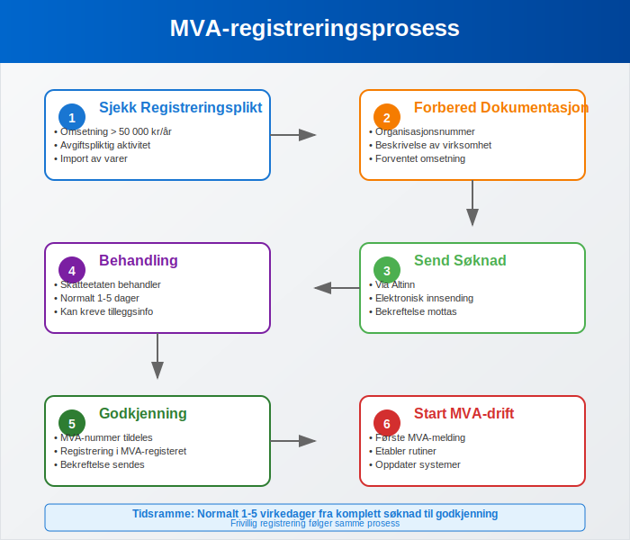
MVA-oppgjør og Rapportering
For en komplett guide til alle aspekter ved momsregnskap, inkludert bokføring, kontoplan, avstemming og praktiske rutiner, se vår detaljerte artikkel om MVA-regnskapsføring.
Terminer for MVA-oppgjør
MVA-pliktige virksomheter må levere MVA-melding og betale MVA til fastsatte terminer:
Månedlige Terminer
For virksomheter med årlig omsetning over 5 millioner kr:
- Frist for innsending: 10. dag i måneden etter terminen
- Frist for betaling: 15. dag i måneden etter terminen
Tomånedlige Terminer
For virksomheter med årlig omsetning mellom 1-5 millioner kr:
- Terminer: januar-februar, mars-april, mai-juni, etc.
- Frist for innsending: 10. dag i måneden etter terminen
- Frist for betaling: 15. dag i måneden etter terminen
Seks-måneders Terminer
For virksomheter med årlig omsetning under 1 million kr:
- Terminer: januar-juni og juli-desember
- Frist for innsending: 10. dag i måneden etter terminen
- Frist for betaling: 15. dag i måneden etter terminen
| Omsetning per år | Terminlengde | Innleveringsfrist | Betalingsfrist |
|---|---|---|---|
| Over 5 mill. kr | Månedlig | 10. dag | 15. dag |
| 1-5 mill. kr | To måneder | 10. dag | 15. dag |
| Under 1 mill. kr | Seks måneder | 10. dag | 15. dag |
MVA-melding
MVA-meldingen skal inneholde:
- Utgående MVA - MVA på salg til kunder
- Inngående MVA - MVA på innkjøp som kan trekkes fra (se Konto 2710 - Inngående merverdiavgift)
- MVA til betaling eller til gode - differansen mellom utgående og inngående MVA
- Spesifikasjoner av omsetning per MVA-sats
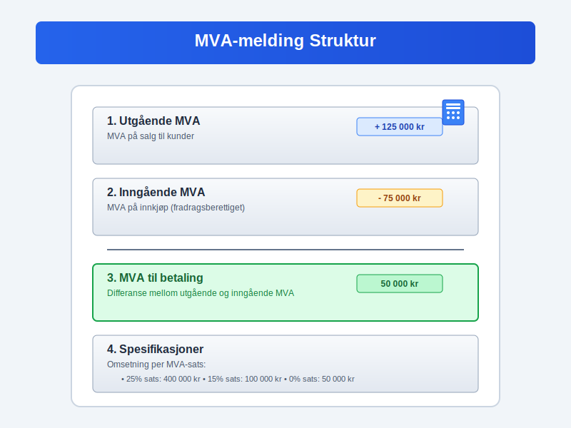
Fradragsrett for MVA
Generell Fradragsrett
Virksomheter som er registrert for MVA har fradragsrett for MVA betalt på:
- Varer og tjenester som brukes i den avgiftspliktige virksomheten
- Driftsmidler som maskiner, utstyr og inventar
- Tjenester som regnskap, juridisk bistand og markedsføring
- Drivstoff til firmabiler
Begrensninger i Fradragsrett
Ingen fradragsrett for MVA på:
- Representasjon - underholdning av kunder og forretningsforbindelser
- Gaver over 500 kr per mottaker per år
- Firmabiler til privatbruk (50% fradrag ved blandet bruk)
- Innkjøp til fritaksberettiget virksomhet
Delvis Fradragsrett
Virksomheter som driver både avgiftspliktig og fritaksberettiget virksomhet har delvis fradragsrett:
- Fradragsrett beregnes som andel avgiftspliktig omsetning av total omsetning
- Sektorinndeling kan brukes for å skille aktivitetene
- Direkte henførbare kostnader gir full fradragsrett
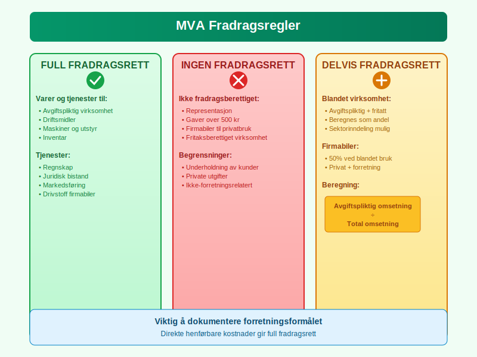
MVA ved Import og Eksport
Import til Norge
Ved import av varer til Norge:
- Importmva beregnes ved innførsel
- Avgiften betales til Tolletaten
- Fradragsrett for registrerte virksomheter
- Særlige regler for tjenester fra utlandet, inkludert omvendt avgiftsplikt
Eksport fra Norge
Ved eksport av varer fra Norge:
- Nullsats (0% MVA) på eksporterte varer
- Dokumentasjonskrav for å dokumentere eksport
- Fradragsrett for kostnader knyttet til eksporten
- Særlige regler for tjenester til utlandet, se omvendt avgiftsplikt
EU/EØS-handel
Handel med EU/EØS-land har særlige regler:
- Erverv fra EU/EØS behandles som import
- Levering til EU/EØS behandles som eksport
- Registreringsplikt i VOEC-registeret for fjernsalg
- Terskelverdier for registreringsplikt i andre land
I B2B-transaksjoner med EU/EØS gjelder ofte omvendt avgiftsplikt, hvor kjøperen beregner og innbetaler MVA i sitt eget land, mens selgeren fakturerer uten MVA.
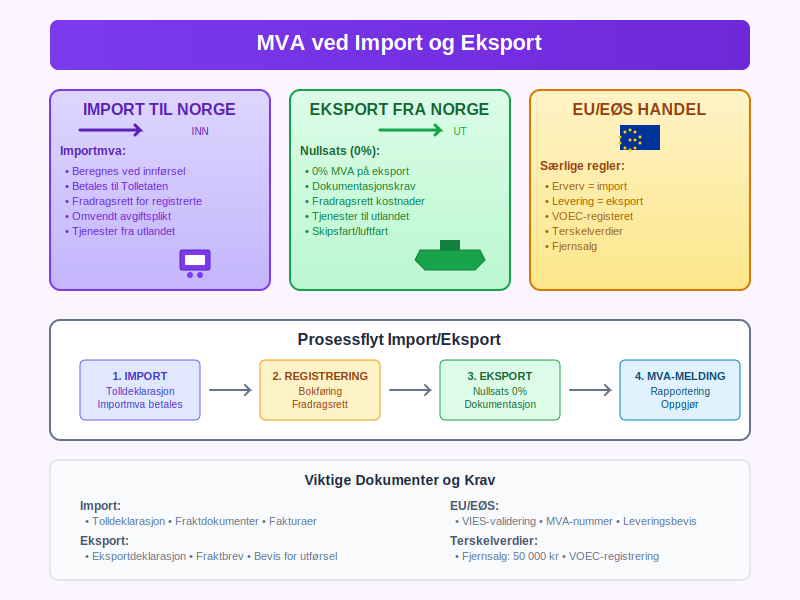
Kontroll og Sanksjoner
Skatteetatens Kontroll
Skatteetaten fører kontroll med MVA-pliktige virksomheter gjennom:
- Bokettersyn - gjennomgang av regnskap og bilag
- Stedlig kontroll - besøk på virksomhetens lokaler
- Tverrkontroll - sammenligning med andre datakilder
- Risikobasert utvelgelse - fokus på høyrisikovirksomheter
Sanksjoner ved Regelbrudd
Brudd på MVA-reglene kan medføre:
Tilleggsskatt
- 20% ved uaktsom overtredelse
- 60% ved grov uaktsom eller forsettlig overtredelse
Forsinkelsesrente
- Månedlig rente på forfalte beløp
- Beregnes fra forfallsdato til betaling skjer
Gebyr
- Gebyr for for sen innlevering av MVA-melding
- Purregebyr ved manglende betaling
Straff
- Bøter ved grove overtredelser
- Fengsel i særlig alvorlige tilfeller
| Type overtredelse | Sanksjon | Prosentsats |
|---|---|---|
| Uaktsom | Tilleggsskatt | 20% |
| Grov uaktsom/forsettlig | Tilleggsskatt | 60% |
| For sen betaling | Forsinkelsesrente | Månedlig |
| For sen melding | Gebyr | Fast beløp |
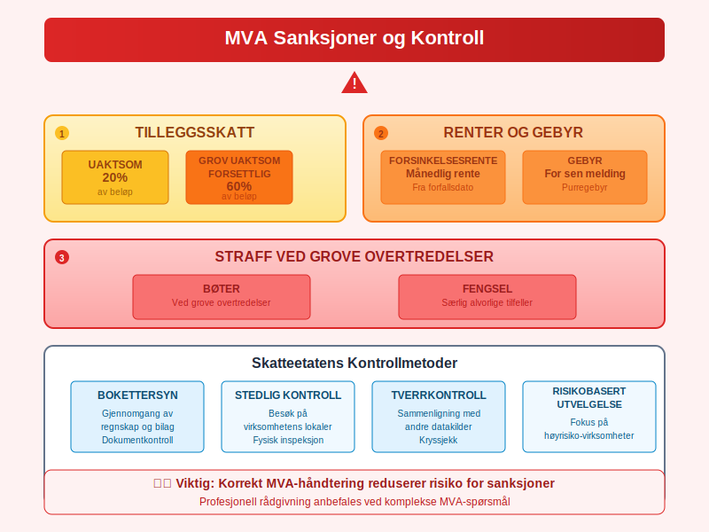
MVA og Regnskapsføring
Bokføring av MVA
MVA skal bokføres korrekt i virksomhetens regnskap:
Utgående MVA (Salg)
- Debet: Kundefordringer (inkl. MVA)
- Kredit: Salgsinntekt (eks. MVA)
- Kredit: Utgående MVA (se Konto 1600 - Utgående merverdiavgift)
Inngående MVA (Innkjøp)
- Debet: Innkjøp/kostnad (eks. MVA)
- Debet: Inngående MVA
- Kredit: Leverandørgjeld (inkl. MVA)
Kontoplan for MVA
Standard kontoplan for MVA:
- 2700 - Utgående merverdiavgift
- 2701 - Utgående merverdiavgift høy sats (25%)
- 2702 - Utgående merverdiavgift middels sats (15%)
- 2703 - Utgående merverdiavgift lav sats (12%)
- 2704 - Utgående merverdiavgift lav sats
- 2710 - Inngående merverdiavgift
- 2711 - Inngående merverdiavgift høy sats
- 2740 - Merverdiavgift til betaling/til gode
Avstemming av MVA
Månedlig avstemming av MVA-kontoer:
- Sammenlign bokført MVA med MVA-melding
- Kontroller at alle fakturaer er registrert
- Sjekk fradragsberettigede kostnader
- Korriger eventuelle feil før innlevering
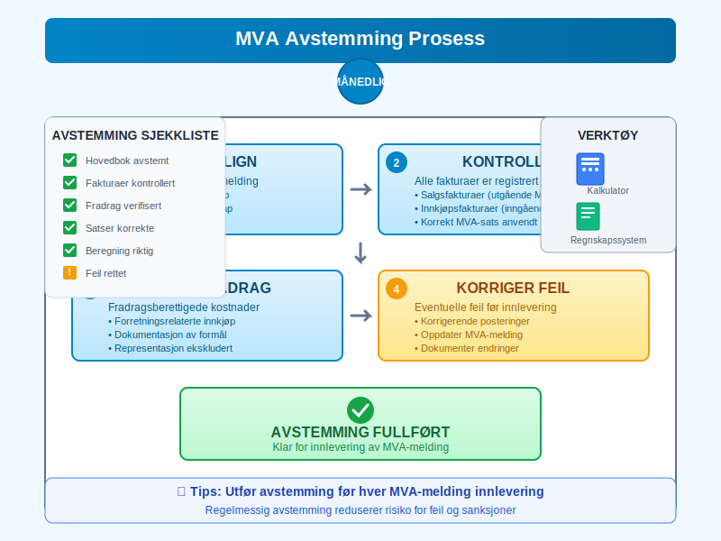
Digitalisering av MVA
Elektronisk MVA-melding
Alle MVA-meldinger må leveres elektronisk via:
- Altinn - for mindre virksomheter
- API-løsninger - for større virksomheter med ERP-systemer
- Regnskapssystemer - direkte integrasjon
SAF-T (Standard Audit File for Tax)
SAF-T er et standardisert format for regnskapsdata:
- Obligatorisk for virksomheter med omsetning over 5 millioner kr
- Detaljerte transaksjonsdata må kunne leveres elektronisk
- Økt kontrollmulighet for Skatteetaten
- Krav til regnskapssystemer om SAF-T-støtte
Fremtidige Utviklinger
Digitale trender innen MVA:
- Sanntidsrapportering - kontinuerlig dataoverføring
- Automatisk kontroll - AI-basert risikovurdering
- Blockchain - sikker og transparent registrering
- Maskinlæring - forbedret feildeteksjon
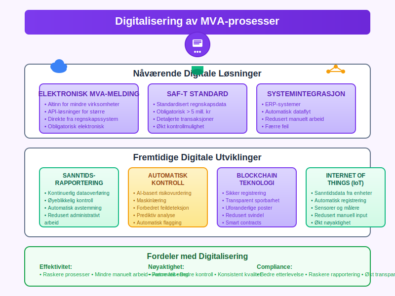
Internasjonale Forhold
EU/EØS MVA-samarbeid
Norge deltar i EU/EØS MVA-samarbeidet:
- Felles regler for grenseoverskridende handel
- VIES-systemet - validering av MVA-numre
- Administrativt samarbeid om kontroll
- Informasjonsutveksling mellom land
VOEC-registeret
VOEC (VAT on E-Commerce) for elektronisk handel:
- Registreringsplikt for utenlandske selskaper
- Forenklede prosedyrer for MVA-oppgjør
- Terskelverdier for registrering i ulike land
- Sentral registrering i ett EU-land
Transfer Pricing og MVA
Transfer pricing påvirker MVA ved:
- Internprising i konsern
- Armlengdeprinsippet må følges
- Dokumentasjonskrav for internasjonale transaksjoner
- Koordinering mellom skatte- og MVA-regler
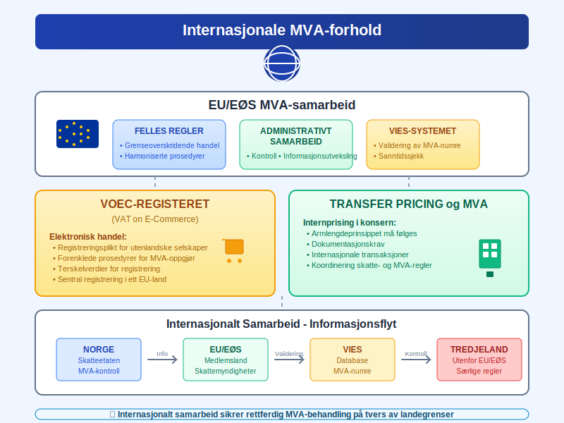
Praktiske Råd for Virksomheter
Implementering av MVA-rutiner
Etabler gode rutiner for MVA-håndtering:
Daglige Rutiner
- Registrer alle fakturaer med korrekt MVA-sats
- Kontroller MVA-beregninger på innkjøp
- Arkiver bilag systematisk
Månedlige Rutiner
- Avstem MVA-kontoer mot hovedbok
- Gjennomgå fradragsberettigede kostnader
- Forbered MVA-melding i god tid
Årlige Rutiner
- Vurder terminlengde basert på omsetning
- Oppdater rutiner ved regelverksendringer
- Gjennomgå MVA-prosedyrer med regnskapsfører
Vanlige Feil og Hvordan Unngå Dem
Feil MVA-sats
- Sjekk hvilken sats som gjelder for din type vare/tjeneste
- Oppdater regnskapssystem ved satsendringer
- Få profesjonell veiledning ved tvil
Manglende Fradragsrett
- Forstå reglene for fradragsrett
- Dokumenter forretningsformålet med innkjøp
- Skill mellom private og forretningsmessige utgifter
For Sen Innlevering
- Sett opp påminnelser i kalenderen
- Automatiser prosesser der det er mulig
- Ha backup-rutiner ved sykdom eller ferie
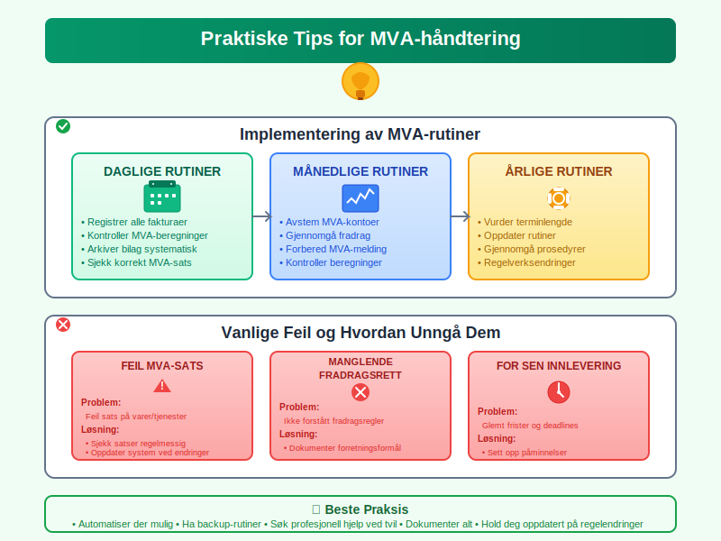
Fremtidige Endringer og Utvikling
Planlagte Regelverksendringer
Kommende endringer i MVA-regelverket:
Digitale Tjenester
- Utvidet avgiftsplikt for digitale tjenester
- Nye registreringskrav for plattformselskaper
- Harmonisering med EU-regler
Miljøavgifter
- Grønn omstilling påvirker MVA-regler
- Karbonprising kan integreres med MVA
- Sirkulærøkonomi får egne regler
Teknologisk Utvikling
Nye teknologier vil påvirke MVA:
- Kunstig intelligens for automatisk klassifisering
- Internet of Things for sanntidsdata
- Kryptovaluta krever nye regler
- Automatiserte transaksjoner utfordrer tradisjonelle modeller
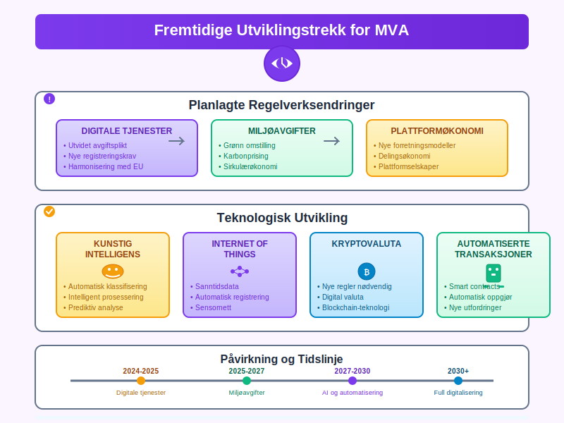
Konklusjon
Merverdiavgift (MVA) er et komplekst, men viktig område for alle virksomheter i Norge. Korrekt håndtering av MVA krever:
- Grundig forståelse av regelverket og satser
- Gode rutiner for registrering og rapportering
- Riktig bokføring og dokumentasjon
- Løpende oppdatering på regelverksendringer
For enkeltpersonforetak, aksjeselskaper og andre foretaksformer er MVA en sentral del av den økonomiske driften.
Profesjonell rådgivning fra regnskapsfører eller revisor anbefales, spesielt ved oppstart av virksomhet eller ved komplekse MVA-spørsmål. God MVA-håndtering bidrar til:
- Lovlig drift i henhold til norske regler
- Optimal likviditet gjennom riktig timing
- Redusert risiko for sanksjoner og tilleggsskatt
- Effektiv drift med gode rutiner og systemer
Uansett virksomhetens størrelse og kompleksitet er det viktig å prioritere MVA-compliance som en integrert del av den daglige driften og den overordnede regnskapsføringen.